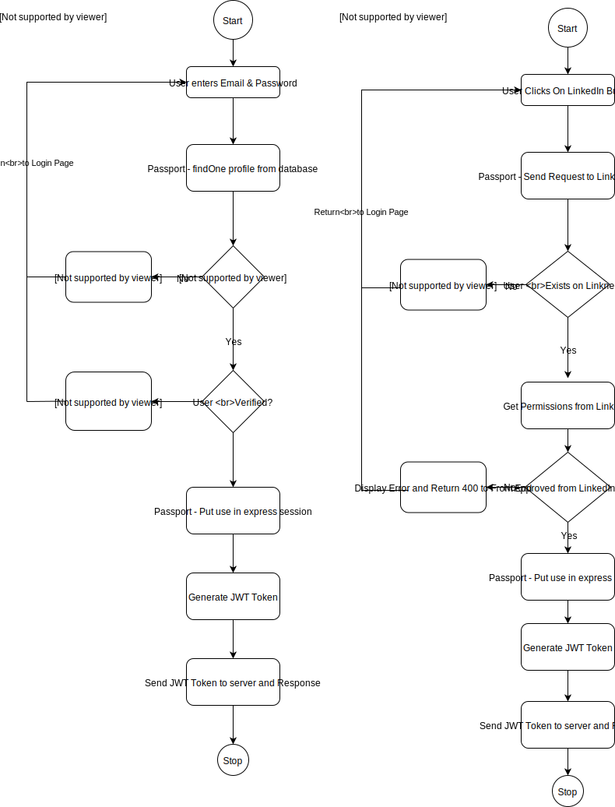
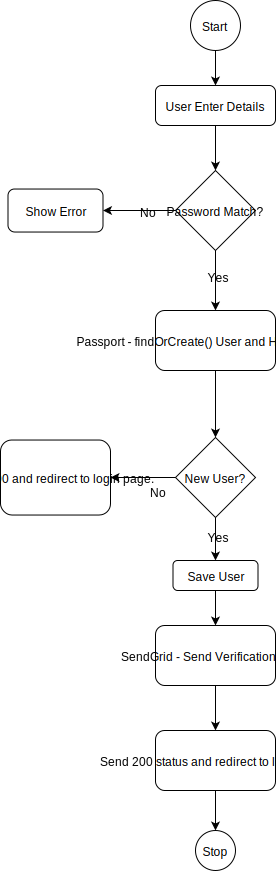
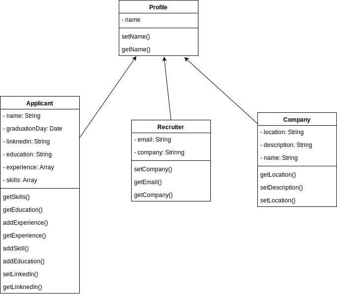
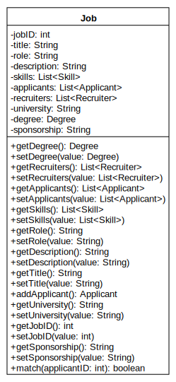

3.1: Login Component
- Component Name
Login Component
- Component Description
The login component, is the first component that the user sees when they start the web application. It authenticates the user and also puts the user into session. The login component also makes use of the LinknedIn OAuth to get data from linknedIn to log the user in. This component also has the 'Forgot Password' feature apart from the authentication feature. For authentication, the component makes use of Local Strategy and LinkedIn Strategy. Local Strategy lets an user authenticate using a username and password. LinkedIn Strategy on the other hand allows the user to log in to the web application using their LinkedIn account.
- Responsible Development Team Member
Hrishikesh Paul
- Component Diagram
Below is the component diagram from the login page. Both the strategies have been depicted.
 - Component User Interface
This component uses a sleek UI, with 2 input fields for the email and password, and 2 buttons - a submit button and a linkedin login button. The component also has a link to reset a password and a link for the user to register.
- Component Objects
The login component makes use of various methods and objects. The main object is the User object. The code checks if there is an user with the user email id provided by the user is present in the database, and authenticates the user. The login component generates a JWT token that is put in the session, and also puts the user information in the Vuex Store, so that all the other components can use the user data. - Component Interfaces (internal
and external)
The component is not interfaced with any other component. - Component Error Handling
Error Case 1: Email Validity Check: Checks for valid email format.
Error Case 2: Password Validity Check: Checks for valid length of password that should be greater than 6.
Error Case 3: Verified User Check: User.isVerified variable checks if the user is verified.
3.2: Register Component
- Component Name
Register Component
- Component Description
The register component is another important component, as it adds users to the database. It makes use of various libraries such as bcrypt, passport, sendgrid. Bcrypt is used for hashing passwords, passport is for registering user through local strategies and sendgrid is for sending verification emails.
- Responsible Development Team Member
Hrishikesh Paul
- Component Diagram
Below is the component diagram from the login page.
 - Component User Interface
This component uses a sleek UI, with innput fields for email, password, re-enter password. A select box for selectign the type of user. A ninput box for phone number.
- Component Objects
The register component makes use of various methods and objects. The main object is the User object. The code checks if there is an user with the user email id provided by the user is present in the database, and if not adds it to the database. The component also sennds an email via sendgrid for the verification of the user. - Component Interfaces (internal
and external)
The component is not interfaced with any other component. - Component Error Handling
Error Case 1: Email Validity Check: Checks for valid email format.
Error Case 2: Password Validity Check: Checks for valid length of password that should be greater than 6.
Error Case 3: Re-Password Validity Check: Checks if the both the password entered is the same.
Error Case 4: Phone Number Validity Check: Checks if the phone number is valid.
3.3: Profile Component
- Component Name
Profile Component
- Component Description
The Profile component is the actual profile of the applicant, recruiter, or company. For the applicant, it will feature experience, skills, education, name, and a link to their LinkedIn. For the recruiter, it will feature their company, name, and contact info. Finally for the company, it will feature their name, location, and a description of what they offer.
- Responsible Development Team Member
Cole Norton
- Component Diagram
 - Component User Interface
This component for applicants will feature 3 main fields, one for skills, one for education, and another for experience. Similarly for all 3 types of profiles, the name and company/school will be located at the top of the profile.
- Component Objects
The applicants profile will be passed to the job listing object when applying, and the company profile will be passed to the job listing object as the company an applicant is applying for. The profile name will also be used in the chat component, as a user must know whom they are communicating with. - Component Interfaces (internal
and external)
The component is not interfaced with any other component. - Component Error Handling
Error Case 1: GPA Validity Check: Checks for valid GPA.
Error Case 2: Graduation Validity Check: Checks for valid graduation year.
Error Case 3: Email Validity Check: Checks for valid email adress in contact info.
3.4: Landing Page Component
- Component Name
Landing Page Component
- Component Description
The Landing Page Component is the main page of our web service after user successfully signing in and creating their profiles. There will be three different views for different type of users, i.e. Applicant, Recruiter and Company administrator.
- Responsible Development Team Member
Rui Zhang
- Component Diagram

- Component User Interface
Applicants should be able to see cards of jobs with company icons they are qualified for, categorized by type of roles, when hover over a card, company name, position name should be displayed. When clicked on a card, job description page should popup. Applicants can also chat with connected recruiters and review submitted applications.
Recruiters should be able to see all positions they manage, categorized by university, displayed as cards, with number of applicants and position title on top. When click on a card, list of applicants should be displayed. Recruiters should also be able to chat with connected applicants.
Company administrators should be able to see all positions they posted, categorized by university, displayed as cards, with number of applicants and position title on top. When click on a card, list of applicants and recruiter should be displayed. administrators should also have ability to modify and post jobs.
All type of users should be able to modify their profiles. Similarly for all 3 types of profiles, the name and company/school will be located at the top of the profile.
- Component Objects
In Applicant's view, Job objects will be used for displaying cards. UserProfile object will be used for displaying avatar and username. Recruiter objects will be used to view connected recruiters and start a chat.
In Recruiter's view, Job objects will be used for displaying cards. UserProfile object will be used for displaying avatar and username. Applicant objects will be used to view connected recruiters and start a chat.
In Company's view, Job objects will be used for displaying cards. UserProfile object will be used for displaying avatar and username. Recruiter objects and Applicant objects will be accessed when job cards are clicked.
- Component Interfaces (internal
and external)
Chat component, Profile component and Job component will be interfaced with this component. - Component Error Handling
Error Case 1: Non-matched position showing up: match applicant's skills with position's skill requirements and only show a job if the applicant have enough required skill.
Error Case 2: Job is not available for applicant's university. Match applicant's university with job's university.
Error Case 3: Job is not available for applicant's current degree. Match applicant's degree with job's degree requirement.
Error Case 4: Job does not provide sponsorship while applicant is international student. check if the job provide sponsorship before display.
3.5: Job Card Component
- Component Name
Job Card Component
- Component Description
The Job Card Component is where most activities take place. Users can view job details, applicants can apply for jobs, recruiters can see candidates for jobs, and company administrators can manage job details, assign recruiter through this component.
- Responsible Development Team Member
Rui Zhang
- Component Diagram
 - Component User Interface
For all user types, Job details including job ID, title, role, description, required skills, degree, whether providing sponsorship, corresponding recruiters and universities will be displayed.
Applicants can apply or hide a job through this component by clicking corresponding buttons. page should popup. Applicants can also chat with connected recruiters and review submitted applications.
Recruiters can access applicants' profiles through this component by clicking on an applicant's name in the applicants list.
Company administrators should be able to modify job details or assign recruiters.
- Component Objects
In Applicant's view, Job objects will be used for displaying job details. Recruiter objects will be used to display recruiters' basic information.
In Recruiter's view, Job objects will be used for displaying job details. Applicant objects will be used to display applicants' basic information.
In Company's view, Job objects will be used for displaying job details. Applicant and Recruiter objects will be used to display applicants' and recruiters' basic information.
- Component Interfaces (internal
and external)
Profile component will be interfaced with this component. - Component Error Handling
Error Case 1: Missing information: Check for completeness of job posting when a company administrator is editing a position's information.
3.6: Chat Component
- Component Name
Chat - Component Description
This is the chat feature of our project. The chat feature will allow applicants and recruiters to message each other once both parties have "accepted" each other. Either the recruiter or applicant will write a message in a text book, which will then be sent to the other party, where the sender will be notified if the message has been "read" or not. In this feature, interviews can be set up, more information on the job can be provided, and links to job assessment sites can be given. This will be a part of the main execution loop, due to the fact a user can chat whenever they feel like it, so we need to be prepared for them to do that. - Responsible Development Team Member
Sharyanya - Component Diagram
- Component User Interface
The user will see a text box upon entering a chat with another user, there will be a button to submit the message, as well as the ability to hit 'enter'. When the other user is typing, 3 bubbles will appear to show that the user is indeed typing. Furthermore, a user will see a "read" message once the other user has read their message. - Component Objects
- Component Interfaces (internal
and external)
The component is not interfaced with any other component. - Component Error Handling
Error Case 1: Completed Message: This will check if the user has typed something in the chat box, as we do not want to send an empty message to another user.

Revision History
| Revision | Date |
Change Description |
|---|---|---|
Cole |
10/5/2019 |
Add initial components |